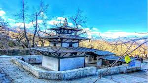

Mustang Tour is one of the best packages for travelers who want to explore the dry, desert-like landscapes along with the rich cultural heritage of Nepal. This region, once known as the "Forbidden Kingdom," is filled with ancient monasteries, hidden caves, and traditional villages.Private vehicles such as jeeps, cars, vans, or minibuses are used for comfortable travel throughout the region. Mustang lies in the rain shadow of the Himalayas and is surrounded by the Tibetan Plateau, offering dramatic mountain views and unique terrain. The name “Mustang†comes from a Tibetan word meaning “Plain of Aspiration.†The entire district is part of the Annapurna Conservation Area — Nepal’s largest protected area, known for its natural beauty and biodiversity.Whether you're interested in nature, culture, or spiritual experiences, the Mustang Tour is a perfect blend of adventure and tradition. 
Price
NPR 5000
per person- ✔ Instant Online Booking
- ✔ Guranteed Departure
- ✔ Privacy Protected
- ✔ Best Price Guaranteed
Pokhara to Tatopani Hot Spring
🚗 Car: 5-6 Hrs 📠Overnight: Tatopani ğŸ½ï¸ Food: No 🨠Accommodation: Guesthouse/Hotel
Journey: Drive from Pokhara to Tatopani enjoying the riverside and mountain views.
Leisure Time: Enjoy a relaxing bath at Tatopani Hot Spring.
Overnight Stay: Hotel in Tatopani.
Tatopani to Marpha
🚗 Car: 4-5 Hrs 📠Overnight: Marpha ğŸ½ï¸ Food: No 🨠Accommodation: Guesthouse/Hotel
Journey: Drive from Tatopani to Marpha, the beautiful apple village.
Leisure Time: Explore Marpha village, apple orchards, and taste local apple products.
Overnight Stay: Hotel in Marpha.
Marpha to Muktinath Temple
🚗 Car: 4 Hrs 📠Overnight: Muktinath ğŸ½ï¸ Food: No 🨠Accommodation: Guesthouse/Hotel
Journey: Drive to Muktinath, a sacred pilgrimage site.
Leisure Time: Visit Muktinath Temple and explore local surroundings.
Overnight Stay: Hotel near Muktinath.
Muktinath to Jomsom
🚗 Car: 2-3 Hrs 📠Overnight: Jomsom ğŸ½ï¸ Food: No 🨠Accommodation: Guesthouse/Hotel
Journey: Drive back to Jomsom, enjoying the scenic mountain drive.
Leisure Time: Explore Jomsom Bazaar and the banks of Kali Gandaki River.
Overnight Stay: Hotel in Jomsom.